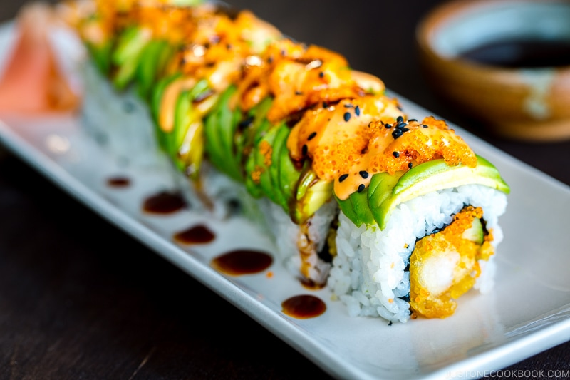
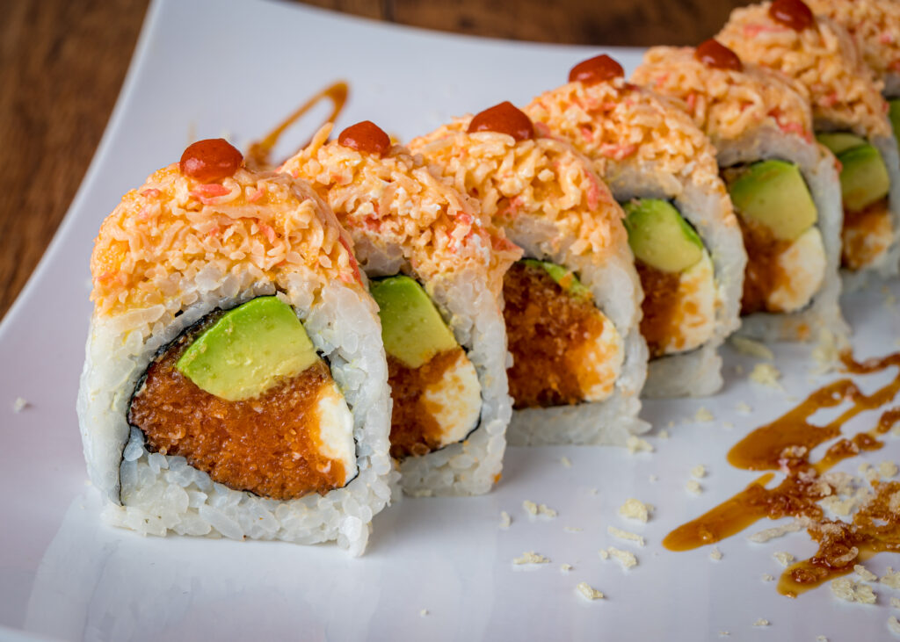

Nuestros Platillos Estrella
Sabores únicos que representan la esencia de ENLOYADOS.

Dragon Roll
Camarón empanizado, aguacate fresco y un toque de nuestra salsa especial.

Samurai Roll
Atún sellado, ajonjolí negro y salsa teriyaki artesanal.

Tokyo Special
Combinación perfecta de salmón fresco, pepino y queso crema.
El arte del sushi en tu mesa
Disfruta y observa cada pieza preparada con dedicación, combinando frescura y el auténtico sabor japonés.
ConocenosLo que dicen nuestros clientes
"El mejor sushi que he probado en años. Frescura total."
- Esteban Rey."El ambiente, la calidad y el sabor… todo impecable."
- Juan Carlos Bodoque"¡De verdad se siente la esencia japonesa en cada platillo!"
- Jose Peréz